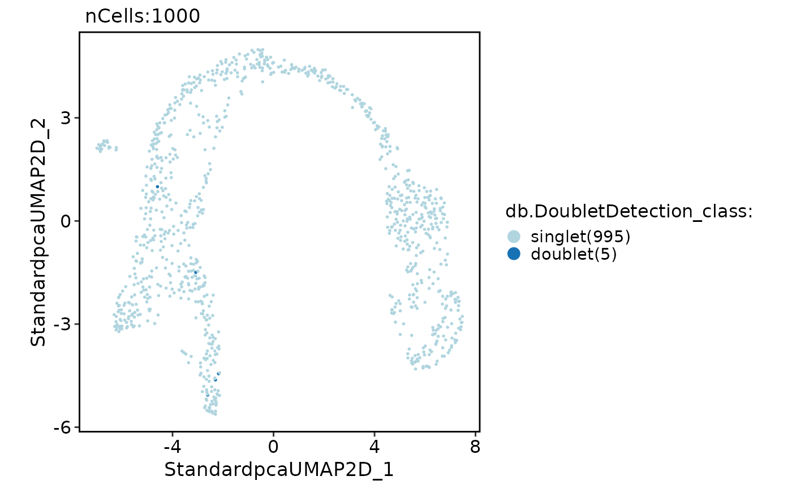
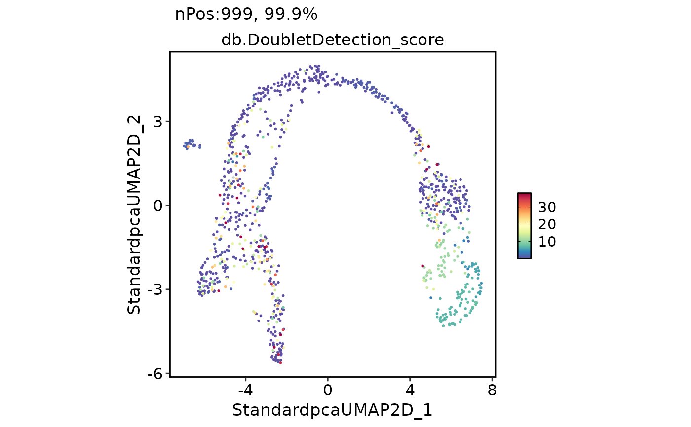

Run doublet-calling with DoubletDetection
Usage
RunDoubletDetection(
srt,
assay = "RNA",
db_rate = ncol(srt)/1000 * 0.01,
cores = 1,
data_type = NULL,
...,
verbose = TRUE
)Arguments
- srt
A Seurat object.
- assay
The name of the assay to be used for doublet-calling. Default is
"RNA".- db_rate
The expected doublet rate. Default is calculated as
ncol(srt) / 1000 * 0.01.- cores
The number of CPU cores to use for
doubletdetection. Default is1.- data_type
Optional precomputed result from CheckDataType for the input assay. Primarily used internally to avoid repeated scans of the same count matrix across nested QC calls.
- ...
Additional arguments to be passed to doubletdetection.BoostClassifier.
- verbose
Whether to print the message. Default is
TRUE.
Examples
data(pancreas_sub)
pancreas_sub <- RunStandardWorkflow(pancreas_sub)
#> ℹ [2026-08-15 17:22:07] Start standard processing workflow...
#> ℹ [2026-08-15 17:22:08] Checking a list of <Seurat>...
#> ! [2026-08-15 17:22:08] Data 1/1 of the `srt_list` is "unknown"
#> Warning: Data 1/1 of the `srt_list` is "unknown"
#> ℹ [2026-08-15 17:22:08] Perform `NormalizeData()` with `normalization.method = 'LogNormalize'` on 1/1 of `srt_list`...
#> ℹ [2026-08-15 17:22:08] Perform `FindVariableFeatures()` on 1/1 of `srt_list`...
#> ℹ [2026-08-15 17:22:08] Use the separate HVF from `srt_list`
#> ℹ [2026-08-15 17:22:08] Number of available HVF: 2000
#> ℹ [2026-08-15 17:22:08] Finished check
#> ℹ [2026-08-15 17:22:08] Perform `ScaleData()`
#> ℹ [2026-08-15 17:22:08] Perform pca linear dimension reduction
#> ℹ [2026-08-15 17:22:09] Use stored estimated dimensions 1:23 for Standardpca
#> ℹ [2026-08-15 17:22:09] Perform `Seurat::FindClusters()` with `cluster_algorithm = 'louvain'` and `cluster_resolution = 0.6`
#> ℹ [2026-08-15 17:22:09] Reorder clusters...
#> ℹ [2026-08-15 17:22:09] Skip `log1p()` because `layer = data` is not "counts"
#> ℹ [2026-08-15 17:22:09] Perform umap nonlinear dimension reduction
#> ✔ [2026-08-15 17:22:16] Standard processing workflow completed
pancreas_sub <- RunDoubletDetection(pancreas_sub)
#> ℹ [2026-08-15 17:22:16] Running DoubletDetection
#> ◌ [2026-08-15 17:22:16] Preparing python environment...
#> ℹ [2026-08-15 17:22:16] Environment name: scop_env and python version: 3.10-1
#> ℹ [2026-08-15 17:22:16] Auto-detecting conda-compatible environment manager...
#> ℹ [2026-08-15 17:22:16] Using conda executable: /usr/share/miniconda/bin/conda
#> ℹ [2026-08-15 17:22:51] Creating Python environment with python "3.10-1" using conda...
#> + /usr/share/miniconda/bin/conda --version
#> + /usr/share/miniconda/bin/conda tos --help
#> ℹ [2026-08-15 17:22:52] Accepting conda Terms of Service for required channels...
#> + /usr/share/miniconda/bin/conda tos accept --override-channels --channel https://repo.anaconda.com/pkgs/main
#> ✔ [2026-08-15 17:22:54] Accepted ToS for channel: "https://repo.anaconda.com/pkgs/main"
#> + /usr/share/miniconda/bin/conda tos accept --override-channels --channel https://repo.anaconda.com/pkgs/r
#> ✔ [2026-08-15 17:22:56] Accepted ToS for channel: "https://repo.anaconda.com/pkgs/r"
#> + /usr/share/miniconda/bin/conda tos accept --override-channels --channel https://repo.anaconda.com/pkgs/msys2
#> ✔ [2026-08-15 17:22:57] Accepted ToS for channel: "https://repo.anaconda.com/pkgs/msys2"
#> + /usr/share/miniconda/bin/conda create --yes --name scop_env 'python=3.10-1' pip 'setuptools<81' wheel --quiet -c conda-forge
#> ✔ [2026-08-15 17:23:18] Environment created successfully: /usr/share/miniconda/envs/scop_env
#> + /usr/share/miniconda/envs/scop_env/bin/python3.10 '-m' 'uv' '--version'
#> ℹ [2026-08-15 17:23:19] Attempting to install uv...
#> ℹ [2026-08-15 17:23:19] Installing uv using pip...
#> + /usr/share/miniconda/envs/scop_env/bin/python3.10 '-m' 'pip' 'install' '--upgrade' 'uv'
#> ✔ [2026-08-15 17:23:21] uv installed successfully via pip
#> ℹ [2026-08-15 17:23:21] 14 packages to install, 3 conda packages and 11 pip packages
#> ℹ [2026-08-15 17:23:21] Installing 3 conda packages
#> ℹ [2026-08-15 17:23:23] Installing 3 packages into environment: scop_env using conda
#> ℹ [2026-08-15 17:23:24] Installing packages via conda...
#> ℹ [2026-08-15 17:23:24] Using channel: "conda-forge"
#> ℹ [2026-08-15 17:23:24] Installing 3 packages...
#> + /usr/share/miniconda/bin/conda 'install' '--yes' '--name' 'scop_env' '-c' 'conda-forge' 'leidenalg=0.10.2' 'tbb=2022.2.0' 'python-igraph=0.11.9'
#> ✔ [2026-08-15 17:23:33] conda installation completed successfully
#> ℹ [2026-08-15 17:23:38] Installing 11 packages using uv
#> ℹ [2026-08-15 17:23:39] Installing 11 packages into environment: scop_env using conda
#> ℹ [2026-08-15 17:23:41] Installing packages via uv...
#> + /usr/share/miniconda/envs/scop_env/bin/uv 'pip' 'install' '--python' '/usr/share/miniconda/envs/scop_env/bin/python3.10' '--force-reinstall' 'setuptools<81' 'matplotlib==3.10.8' 'numba==0.66.0' 'llvmlite==0.48.0' 'numpy==1.26.4' 'packaging>=24.0' 'pandas==2.2.0' 'scikit-learn==1.7.0' 'scipy==1.15.3' 'doubletdetection==4.3.0.post1' 'louvain==0.8.2'
#> ✔ [2026-08-15 17:23:44] uv installation completed
#> ✔ [2026-08-15 17:23:51] Python environment ready
#> ✔ Until next loading, the environment will be cached
#> Environment manager config:
#> Manager: conda
#> Executable: /usr/share/miniconda/bin/conda
#> Environment: /usr/share/miniconda/envs/scop_env
#> Python config:
#> python: /usr/share/miniconda/envs/scop_env/bin/python3.10
#> version: Python 3.10.1
#> ℹ [2026-08-15 17:23:54] Data type is raw counts
#> ℹ [2026-08-15 17:23:57] Checking 1 package in environment: scop_env
#> ℹ [2026-08-15 17:23:58] Retrieving package list for environment: scop_env
#> ℹ [2026-08-15 17:23:59] Found 91 packages installed
#> ✔ [2026-08-15 17:24:01] doubletdetection == 4.3.0.post1
#> ℹ [2026-08-15 17:24:03] Checking 1 package in environment: scop_env
#> ℹ [2026-08-15 17:24:05] Retrieving package list for environment: scop_env
#> ℹ [2026-08-15 17:24:06] Found 91 packages installed
#> ✔ [2026-08-15 17:24:08] louvain == 0.8.2
#> ! [2026-08-15 17:24:24] Found 1 cells with unexpected DoubletDetection labels; setting to "doublet"
#> Warning: Found 1 cells with unexpected DoubletDetection labels; setting to "doublet"
#> ✔ [2026-08-15 17:24:24] DoubletDetection doublet calling completed
CellDimPlot(
pancreas_sub,
reduction = "umap",
group.by = "db.DoubletDetection_class"
)

FeatureDimPlot(
pancreas_sub,
reduction = "umap",
features = "db.DoubletDetection_score"
)
